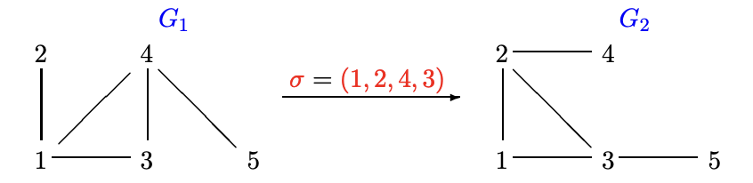
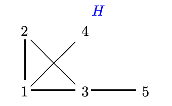
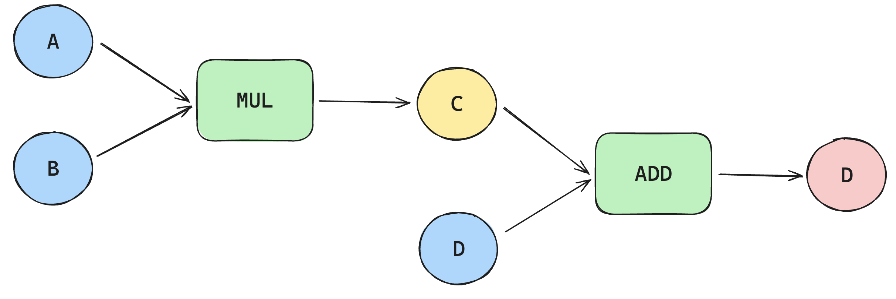
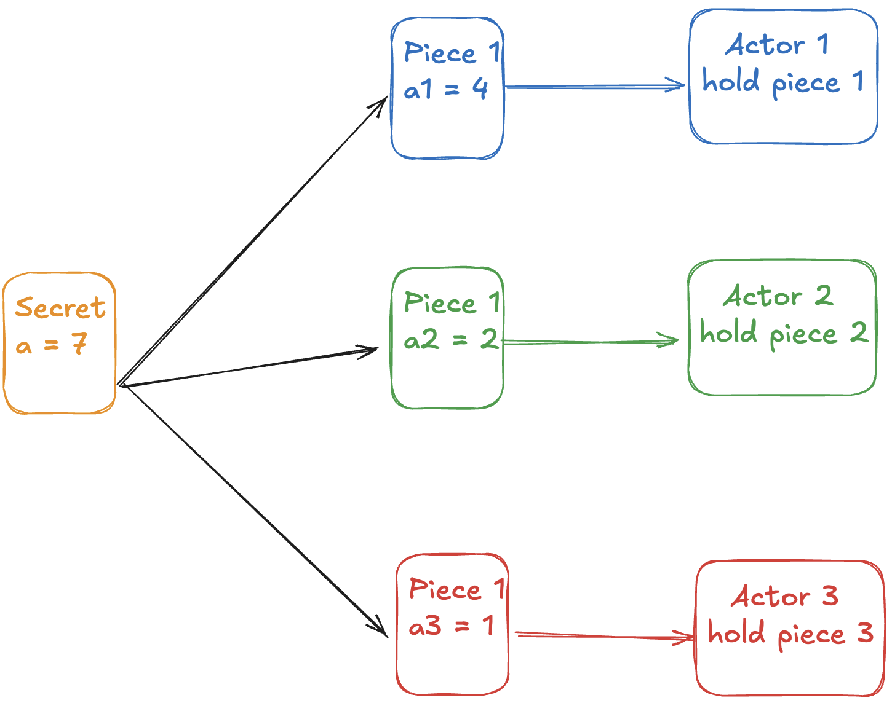

ZK Proofs — ZKBoo and ZKBoo+
Introduction of ZK proofs with Graph Isomorphisms.
July 14, 2025 · cryptography, zkml, zkproof
⛳ Goal: We want to convince someone that we know something without revealing what exactly we know!
As it usally happens we ask help to 🙍🏻♀️ Alice and 🙎🏻♂️ Bob. Alice is the prover and Bob is the verifier.
Let’s consider as an example the graph isomorphism problem.
Problem: Given two graphs G1 and G2, with the same number of vertices, we say that the graphs are isomorphic if there is a relabelling of the vertices of one graph, which produces
the second graph. The relabelling is called φ.
So φ is a function that transforms G1 into G2.
beginequation varPhi : G₁ longrightarrow G₂ endequation
This is a hard computational problem, basically the only way to find it out is to try all the permutation of vertices and see if we can get G2.
Example:

Here, the isomorphism is given as a permutation in cycle notation:
Phi = (1, 2, 4, 3)
This means:
- Replace vertex 1 with 2
- Replace vertex 2 with 4
- Replace vertex 4 with 3
- Replace vertex 3 with 1
- Vertex 5 stays as 5 (because it is not mentioned)
Suppose Alice know the isomorphism φ that transforms G1 into G2.
φ is the prover’s private input that Alice doesn’t want to reveal. But Alice want to convince Bob about the fact that she really knows φ. This is where zero knowledge proofs can help us.
Alice takes the graph G2 and applies a secret random permutation ψ to the vertices of G2 to
produce another isomorphic graph H.
This new isomorphism can be ψ = (1, 2). So now we get:

Peggy now publishes H as a commitment, she of course knows all the following secret graph
isomorphisms:
Phi : G₁ longrightarrow G₂ Psi : G₂ longrightarrow H Psi circ Phi = Phi · Psi : G₁ longrightarrow H
Now Bob gives Alice a challenge! He chooses randomly G1 or G2, and asks for the isomorphism between H and G_i (where i is 1 or 2).
So Alice will give bob either χ = ψ or χ = Φ· ψ. But non of these 2 solutions to the challenge will reveal the secret φ.
Foe example, if Bob chooses G1 then Alice publishesPhi · ψ = (1, 2, 4, 3) · (1, 2) = (2, 4, 3).
Bob now can verify that (2, 4, 3) actually converts G1 into H. So he starts thinking that Alice knows for real some secret φ.
Bob is still not sure though, because Alice can cheat. How?
Suppose Alice does not know φ, in other words, she doesn’t know the secret isomorphism between G1 and G2. She wants to convince Bob she does, anyway.
What can she do? ❓
- She can still pick some random H isomorphic to G2 by picking a random ψ.
- She sends H=ψ(G2) to Bob.
- If Bob asks b=2, she happily replies ψ, because she knows ψ:G2→H
But if Victor asks b=1, she must produce φ⋅ψ, an isomorphism G1→H.
But without knowing φ she cannot compute φ⋅ψ.
→ She’s stuck and cannot respond correctly if b=1 is chosen. So she has 50% of probability to cheat succesfully.
Note that randomness is essential because:
- If
b=1always → the protocol may leak φ over time → breaks zero-knowledge. - If
b=2always → Alice can cheat and never gets caught → breaks soundness. - If b is random → Alice cannot cheat successfully (with more than negligible probability) and the protocol stays zero-knowledge.
So if Alice is cheating she will only be able to respond to Bob correctly 50%
of the time. So we can repeat the protocol over and over to lower the probability that Alice is cheating.
If Alice used the same H repeatedly, Bob could ask b=1 in one round and b=2 in another, and get both φ *ψ and ψ.
From these two, he could compute: (φ⋅ψ)*(ψ^-1) and learn φ, which she is supposed to keep secret. Thus, Alice must generate a fresh H each round to prevent Bob from learning anything.
The protocol properties we want to have in zk proofs are:
1️⃣ Completeness: If Alice knows φ, she always convinces Bob.
2️⃣ Soundness: If Alice does not know φ, she can only guess, so she has at most a 50% chance of cheating successfully in one round. Repeating the protocol k times makes her chance of cheating successfully drop to (1/2)^k, which becomes negligible.
This is it fir the introduction of zkproofs. Now let’s see two real ZKProof protocols named ZKBoo and ZKBoo+
ZKBoo and ZKBoo+
We can also define a zkproof as a way for a Prover to convince a Verifier that they know a secret x that satisfies a publicly known computation f(x) = y .
For example Alice want to prove hat she knows x= ( a,b,d) such that the following are satisfied:
a · b = c c + d = e
without revealing the secrets (a,b,d).
If we assume that we work only with boolean variables, we can model the computation f() as a boolean circuit.
- The multiplication becomes the
ANDgate. - The addition becomes the
XORgate.

Instead of restricting variables to just two possible values (0 or 1), we can allow them to take on more values, up to some maximum. To do this, we use a mathematical structure called a field, with a chosen prime number p All arithmetic operations are then performed modulo p (i.e., we work with numbers from 0 to p−1). This technique is known as ZKBoo+.
In order to understand how the ZKBoo protocol works we need to clarify some concepts, let’s start with secret sharing.
Secret Sharing
We can split a variable x in 3 (or more) parts x1,x2,x3 such that:
x = x₁ + x₂ + x₃ ±odp
So if we share with somebody part of our secret e.g (x2 and x3) we will still not reveal the secret x.
Multi-Party Computation in the head (MPC)
Pretend that the three parts of a secret variable are held by three different parties.

Each actor (or party) only knows its own share of each value. So if our computations include variables a,b,c,d,e,r the actor i will have access to a_i, b_i, c_i, d_i, e_i and r_i.
The party can perform the computation locally, only on the shares he knows
- Addition is easy: each party adds their own shares.
- XOR is also easy: each party XORs their own bits.
We differentiate between addition and XOR based if we use ZKBoo or ZKBoo+
- Multiplication is tricky: because of cross-terms between shares.
In order to support multiplication we need to be a bit smart.
Part of our original computation was :
a · b = c
So let’s split these variables.
a = a₁ + a₂ + a₃ b = b₁ + b₂ + b₃ c = c₁ + c₂ + c₃
Now each party is able to do its own computation
extActor 1: quad a₁ · b₁ = c₁ extActor 2: quad a₂ · b₂ = c₂ extActor 3: quad a₃ · b₃ = c₃
But we want that the following equation still holds:
a + b = (a₁ b₁) + (a₂ b₂) + (a₃ b₃)
But this is not true now because
a + b =(a₁ + a₂ + a₃) + (b₁ + b₂ + b₃) =a₁ b₁ + a₁ b₂ + a₁ b₃ + dots + a₃ b₁ + a₃ b₂ + a₃ b₃ eq c₁ + c₂ + c₃ =(a₁ b₁) + (a₂ b₂) + (a₃ b₃)
Crap! This is because in multiplications we have cross terms! So the trick is to split the cross terms and define the following:
c₁ = a₁ b₁ + a₁ b₂ + a₂ b₁ c₂ = a₂ b₂ + a₂ b₃ + a₃ b₂ c₃ = a₃ b₃ + a₁ b₃ + a₃ b₁
Now it holds that :
a · b =(a₁ + a₂ + a₃) + (b₁ + b₂ + b₃) =c₁ + c₂ + c₃
Commitments
A commitment allows us to promise to some value without revealing it. A commitment is like a sealed envelope:
- The prover writes down each party’s view, seals it, and sends the sealed envelopes to the verifier.
- Once the verifier decides which 2 to open, the prover opens those 2 envelopes.
A good commitment is:
- Binding: once you seal it, you can’t change the contents.
- Hiding: until opened, no one can tell what’s inside.
A simple commit is the hash of some value.
com = SHA256(m || r)
Meaning that we can commit a message m, by adding to it some random noise by concatenating and the “crypting” the message with a hash function.
The verifier can see the hash message, and if he gets later the information m,r he can check if he obtain the same hash, so if the commitment was truthful.
Example:
m = “marcello”
r = “123”
SHA256(”marcello123”) —> “41ADf3gf34sd2”
The prover uses “41ADf3gf34sd2” as a committment. When the verifier will get “marcello” and “123” he can check weather SHA256(”marcello123”) really results in “41ADf3gf34sd2”.
Sigma Protocol
Many ZK proofs systems follow the sigma protocol, also called interactive protocol. In this case we have two parties interacting exchanging messages in three different steps.
The three messages are:
- A commitment
- A challenge
- A response to the challenge
This Sigma protocol is like a primitive ZKProof. It allow the prover to convince a verifier that some statement is true, without revealing the secret info.
Basically what happens is that the prover send to the verifier concatenates the variables of the original computation, so he commits to these variables.
The the verifies says something
“If you really know the secret variables that solve the equations, show me some part of these secrets variables, so only some part of the secret sharing”
The prover than shows these parts of the secret variable.
Now the verifier starts believing that the prover really knows the secret variable, but to be more convinced he once to do another round, and then another and so on. N times!
This is the general concept of the sigma protocol, we will go more in depth now by showing how this is implemented in the ZKBoo protocol.
We have all the ingredients for the ZKBoo!
Recall that the original set of equations for which we know the secrets variables (a, b, d) is:
a · b = c c + d = e
After the secret sharing each of this variable is split in three parts. Plus we will have also some random variable r split in r1, r2, and r3. I will explain soon why this is needed.
The prover can now commit to these 3 sets of variables (one set for each imaginary actor of the MPC).
Prover:Commitment: {com1, com2, com3} where com_k = hash(a_k, b_k, c_k, d_k, e_k, r_k), k = {1,2,3}
Verifier now challenges the prover asking him to reveal 2 columns. What columns? You can imagine the set of variables arranged in a table.
| Variable | Party 1 (k=1) | Party 2 (k=2) | Party 3 (k=3) |
|---|---|---|---|
| a | a1 | a2 | a3 |
| b | b1 | b2 | b3 |
| c | c1 | c2 | c3 |
| d | d1 | d2 | d3 |
| e | e1 | e2 | e3 |
If the Prover shows 2 columns, the verifier can’t still infer the original variable since you need all the 3 part of the secrets.
We have one problem though. We defined c_k in a tricky way, so the actual value are:
| Variable | Party 1 (k=1) | Party 2 (k=2) | Party 3 (k=3) |
|---|---|---|---|
| a | a1 | a2 | a3 |
| b | b1 | b2 | b3 |
| c | a1b1 + a1b2 + a2b1 | a2b2 + a2b3 + a3b2 | a3b3 + a1b3 + a3b1 |
| d | d1 | d2 | d3 |
| e | e1 | e2 | e3 |
| r | r1 | r2 | r3 |
In this case when we reveal:
- column 1, we will also reveal some ino of secret party 2 (a1b2)
- column 2, we will also reveal some ino of secret party 3
- column 3, we will also reveal some ino of secret party 1 (a1b2)
We don’t want to show information about the columns that are not requested!
That is why we add some randomness, so that the it is more difficult for the verifier to infer any information out of it.
So the way we actually want to define c_k is:
c₁ = a₁ b₁ + a₁ b₂ + a₂ b₁ + r₁ - r₂ c₂ = a₂ b₂ + a₂ b₃ + a₃ b₂ + r₂ - r₃ c₃ = a₃ b₃ + a₁ b₃ + a₃ b₁ + r₃ - r₁
Note that when we add them up the random terms cancel out, so it still holds that c = c1 + c2 + c3.
But what columns the verifier asks to the prover to show? He has 3 possibilities : (1,2), (2,3) , (1,3).
So he randomly chooses 2 columns (i,j), and the verifier shows those columns.
The verifier now does:
- Consistency Check:
quad 1. quad c_i = a_i b_i + a_i b_j + a_j b_i + r_i - r_j quad 2. quad c_j = a_j b_j + a_j b_k + a_k b_j + r_j - r_k quad ( extcannot be checked: no k ext variables) quad 3. quad c_i + d_i = e_i quad 4. quad c_j + d_j = e_j
- Recompute the hashes of the commitment and double check the hold
Improve Soundness
As we have seen for the graph isomorphism at the beginning, the verifier has the chance of cheating equal to 1/3, if he can guess which columns will be requested by the verifier.
Thats why wee need to repeat several rounds of the protocol, and in each round the verifier will produce a different set of secret sharing variable, in order to don’t leak any secret info.
With n rounds, the probability of the verifier to cheat is (1/3)^N which becomes negligible!
Flat - Shamir Transform
We still have one problem though. With N rounds the messages that need to be exchanged are a lot! Can we summarise it entirely in one single message?
We said at the beginning, that is really important the randomness introduced by the verifier in asking randomly two columns (i,j).
But maybe the prover can simulate this randomness itself, so he doesn’t need to ask the prover.
The way to do this is to use an hash function.
- Replace verifiers random challenge with a hash of the commitments + some public info on which verifier and prover have agreed upon
- Since hashes are unpredictable and binding, prover can’t cheat
So the steps of the algorithm become:
- Prover commits for all rounds
- Prover computes challenge for each round:
challenge_k = SHA256(all previous commitments, pbl info, k ) mod 3- Then, for each round k, the prover reveals the two columns according to challenge_k and sends all the responses to the verifier in a single package.
- The verifier simply recomputes the challenges using the same hash function and verifies the responses against the commitments and the public info.
Implementing ZKBoo
The following Python code is a demonstration of a Zero-Knowledge Proof (ZKP) using the ZKBoo protocol principles.
It shows how a prover can convince a verifier that they know secret values a,b,da, b, da,b,d such that a⋅b+d=ea cdot b + d = ea⋅b+d=e,
without revealing the secrets themselves.
The code implements:
- A small finite field Fpmathbb{F}_pFp for arithmetic modulo a prime p=101p=101p=101.
- Secret-sharing of variables a,b,da, b, da,b,d into three random shares each.
- Computation of intermediate values c=a⋅bc = a cdot bc=a⋅b and e=c+de = c + de=c+d using MPC-in-the-head techniques.
- Commitment of shares with SHA-256 hashes to ensure hiding and binding.
- A verifier that randomly challenges the prover to open two out of three views.
- Verification that the opened views are consistent with the commitments and the computation.
It simulates a single round of the protocol and clearly logs all the steps to illustrate how the prover and verifier interact —
while guaranteeing that the verifier learns nothing about the secret values beyond the fact that the prover knows them.
import random, hashlib
p = 101 # Prime field modulus
class FiniteField:
"""Simple finite field implementation for GF(p)"""
def __init__(self, modulus):
self.p = modulus
def random_element(self):
"""Generate a random field element"""
return random.randint(0, self.p - 1)
def add(self, a, b):
"""Addition in the field"""
return (a + b) % self.p
def sub(self, a, b):
"""Subtraction in the field"""
return (a - b) % self.p
def mul(self, a, b):
"""Multiplication in the field"""
return (a * b) % self.p
F = FiniteField(p)
def secret_share(v):
"""Split 'v' into 3 random shares mod p."""
s1, s2 = F.random_element(), F.random_element()
s3 = (v - s1 - s2) % p
print(f"Secret sharing {v}:")
print(f" s1 = {s1}, s2 = {s2}, s3 = {s3}")
print(f" Check: ({s1} + {s2} + {s3}) mod {p} = {(s1 + s2 + s3) % p} = {v}")
return [s1, s2, s3]
def commit(vals):
"""Hash tuple of values to produce a commitment."""
commitment = hashlib.sha256(",".join(map(str, vals)).encode()).hexdigest()
print(f"Creating commitment for {vals}")
print(f" Commitment: {commitment[:16]}...")
return commitment
def multiply_shares(a, b):
"""Compute c_i for a single gate a*b=c with offsets r_i."""
print(f"\
MULTIPLICATION GATE:")
print(f" Input a shares: {a}")
print(f" Input b shares: {b}")
print(f" We need to compute c = a × b")
print(f" Expected result: sum(a) × sum(b) = {sum(a) % p} × {sum(b) % p} = {(sum(a) * sum(b)) % p}")
r = [F.random_element() for _ in range(3)]
print(f" Random offsets r: {r}")
print(f" Computing c shares using ZKBoo multiplication formula:")
print(f" c[i] = a[i]×b[i] + a[i]×b[i+1] + a[i+1]×b[i] + r[i] - r[i+1]")
c = []
for i in range(3):
j = (i + 1) % 3
term1 = a[i] * b[i]
term2 = a[i] * b[j]
term3 = a[j] * b[i]
term4 = r[i] - r[j]
c_i = (term1 + term2 + term3 + term4) % p
c.append(c_i)
print(f" c[{i}] = {a[i]}×{b[i]} + {a[i]}×{b[j]} + {a[j]}×{b[i]} + ({r[i]} - {r[j]})")
print(f" = {term1} + {term2} + {term3} + {term4} = {c_i}")
print(f" Result c shares: {c}")
print(f" Verification: sum(c) = {sum(c) % p} = {(sum(a) * sum(b)) % p}")
assert sum(c) % p == (sum(a) * sum(b)) % p
return c, r
def zkboo_prover(a, b, d):
"""Generate shares for a,b,d and compute c=a*b, e=c+d with random offsets."""
print(f"\
PROVER PHASE:")
print(f" Secret values: a={a}, b={b}, d={d}")
print(f" Statement to prove: a×b + d = {a}×{b} + {d} = {a*b + d}")
print(f"\
STEP 1: Secret sharing inputs")
a_sh = secret_share(a)
b_sh = secret_share(b)
d_sh = secret_share(d)
print(f"\
STEP 2: Computing multiplication c = a × b")
c_sh, r_sh = multiply_shares(a_sh, b_sh)
print(f"\
STEP 3: Computing addition e = c + d")
e_sh = [(c_sh[i] + d_sh[i]) % p for i in range(3)]
print(f" c shares: {c_sh}")
print(f" d shares: {d_sh}")
print(f" e shares: {e_sh}")
print(f" Verification: sum(e) = {sum(e_sh) % p} = sum(c) + sum(d) = {sum(c_sh) % p} + {sum(d_sh) % p} = {(sum(c_sh) + sum(d_sh)) % p}")
print(f"\
STEP 4: Creating commitments")
commits = []
for i in range(3):
vals = (a_sh[i], b_sh[i], c_sh[i], d_sh[i], e_sh[i], r_sh[i])
print(f" Share {i}: a={a_sh[i]}, b={b_sh[i]}, c={c_sh[i]}, d={d_sh[i]}, e={e_sh[i]}, r={r_sh[i]}")
commits.append(commit(vals))
return a_sh, b_sh, c_sh, d_sh, e_sh, commits, r_sh
def zkboo_verifier_challenge():
"""Pick two random shares to reveal."""
challenge = random.sample(range(3), 2)
print(f"\
VERIFIER CHALLENGE:")
print(f" Randomly chosen shares to reveal: {challenge}")
print(f" Hidden share: {[i for i in range(3) if i not in challenge][0]}")
print(f" Why only 2 shares? Because 2 shares reveal nothing about the secret!")
return challenge
def zkboo_prover_response(ch, a, b, c, d, e, r):
"""Reveal the requested two shares with all data."""
print(f"\
PROVER RESPONSE:")
print(f" Revealing shares {ch[0]} and {ch[1]}:")
response = [{"a": a[i], "b": b[i], "c": c[i], "d": d[i],
"e": e[i], "r": r[i]} for i in ch]
for i, share_idx in enumerate(ch):
share = response[i]
print(f" Share {share_idx}: a={share['a']}, b={share['b']}, c={share['c']}, d={share['d']}, e={share['e']}, r={share['r']}")
return response
def zkboo_verify(ch, resp, commits):
"""Check commitments and verify correctness of revealed shares."""
print(f"\
VERIFICATION PHASE:")
print(f" CHECK 1: Commitment verification")
for i in range(2):
share_data = (resp[i]["a"], resp[i]["b"], resp[i]["c"],
resp[i]["d"], resp[i]["e"], resp[i]["r"])
computed_commit = commit(share_data)
original_commit = commits[ch[i]]
match = computed_commit == original_commit
print(f" Share {ch[i]}: {'OK' if match else 'FAIL'} Commitment matches")
if not match:
print(f" Commitment verification failed!")
return False
print(f" CHECK 2: Multiplication consistency")
def check_c(sh_i, sh_j):
"""Ensure multiplication consistency of revealed shares."""
lhs = (sh_i["a"] * sh_i["b"] + sh_i["a"] * sh_j["b"] +
sh_j["a"] * sh_i["b"] + (sh_i["r"] - sh_j["r"])) % p
rhs = sh_i["c"]
print(f" Formula: {sh_i['a']}×{sh_i['b']} + {sh_i['a']}×{sh_j['b']} + {sh_j['a']}×{sh_i['b']} + ({sh_i['r']} - {sh_j['r']}) = {lhs}")
print(f" Should equal c = {rhs}: {'OK' if lhs == rhs else 'FAIL'}")
return lhs == rhs
if (ch[0] + 1) % 3 == ch[1]:
print(f" Checking adjacent shares {ch[0]} and {ch[1]}...")
if not check_c(resp[0], resp[1]):
print(f" Multiplication verification failed!")
return False
elif (ch[1] + 1) % 3 == ch[0]:
print(f" Checking adjacent shares {ch[1]} and {ch[0]}...")
if not check_c(resp[1], resp[0]):
print(f" Multiplication verification failed!")
return False
else:
print(f" Shares {ch[0]} and {ch[1]} are not adjacent - no multiplication check needed")
print(f" CHECK 3: Addition consistency (e = c + d)")
for i, share in enumerate(resp):
expected_e = (share["c"] + share["d"]) % p
actual_e = share["e"]
match = expected_e == actual_e
print(f" Share {ch[i]}: c + d = {share['c']} + {share['d']} = {expected_e} = e = {actual_e}: {'OK' if match else 'FAIL'}")
if not match:
print(f" Addition verification failed!")
return False
print(f" All checks passed. Proof is VALID.")
return True
def test_zkboo_single_round():
"""Test a single-round reveal for a,b,d = 3,4,5."""
print("=" * 70)
print("ZKBOO ZERO-KNOWLEDGE PROOF DEMONSTRATION")
print("=" * 70)
print("Goal: Prove knowledge of a, b, d such that a×b + d = e")
print("WITHOUT revealing the actual values of a, b, d!\
")
a, b, d = 3, 4, 5
print(f"Secret statement: {a} × {b} + {d} = {a*b + d}")
print(f" (The verifier will NOT learn these values)")
a_sh, b_sh, c_sh, d_sh, e_sh, commits, r_sh = zkboo_prover(a, b, d)
ch = zkboo_verifier_challenge()
resp = zkboo_prover_response(ch, a_sh, b_sh, c_sh, d_sh, e_sh, r_sh)
result = zkboo_verify(ch, resp, commits)
print(f"\
FINAL RESULT:")
if result:
print("Zero-knowledge proof ACCEPTED.")
print(" The prover has convinced the verifier they know values a, b, d")
print(f" such that a×b + d = {a*b + d}, without revealing the actual values.")
else:
print("Zero-knowledge proof REJECTED.")
print(" The prover failed to convince the verifier.")
print("=" * 70)
assert result, "ZKBoo single-round failed"
test_zkboo_single_round()
Implement multiple rounds
- Loops over
num_roundsrounds of the prover-verifier interaction. - If any round fails, the whole proof is rejected.
- If all rounds pass, the proof is accepted, and the soundness error becomes (2/3)num_rounds(2/3)^{num_rounds}(2/3)num_rounds.
def test_zkboo_multiple_rounds(num_rounds=10):
print("=" * 70)
print(f"ZKBOO ZERO-KNOWLEDGE PROOF WITH {num_rounds} ROUNDS")
print("=" * 70)
print("Goal: Prove knowledge of a, b, d such that a×b + d = e")
print("WITHOUT revealing the actual values of a, b, d!\
")
a, b, d = 3, 4, 5
print(f"Secret statement: {a} × {b} + {d} = {a*b + d}")
print(f" (The verifier will NOT learn these values)\
")
all_passed = True
for round_num in range(1, num_rounds + 1):
print(f"\
\
=== ROUND {round_num} ===\
")
# Prover generates proof
a_sh, b_sh, c_sh, d_sh, e_sh, commits, r_sh = zkboo_prover(a, b, d)
# Verifier sends challenge
ch = zkboo_verifier_challenge()
# Prover responds
resp = zkboo_prover_response(ch, a_sh, b_sh, c_sh, d_sh, e_sh, r_sh)
# Verifier checks
result = zkboo_verify(ch, resp, commits)
if not result:
all_passed = False
print(f"Round {round_num} FAILED")
break
else:
print(f"Round {round_num} PASSED")
print("\
FINAL RESULT:")
if all_passed:
print(f"All {num_rounds} rounds passed. Proof accepted.")
else:
print(f"Proof failed at round {round_num}.")
print("=" * 70)
# Run with desired number of rounds
test_zkboo_multiple_rounds(10)